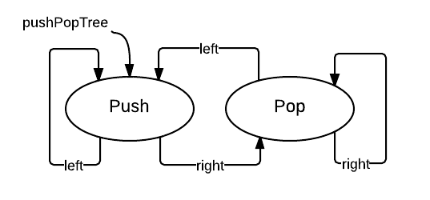
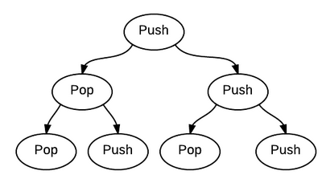

April 5, 2013
程序员对重复出现的东西都特别敏感，不是吗？重复出现出现的东西背后可能就是一个模式。
例子1：ZOJ-1004-Anagrams by Stack
问题找出一个入栈、出栈序列，把字符串A变成B，有多个可能序列。这是回溯和栈的问题，我把这个问题在一棵Push-Pop树上的遍历问题:
data Tree a = Empty
| Node a (Tree a) (Tree a)
data Action = Push | Pop deriving (Eq, Ord)
pushPopTree :: Tree Action
pushPopTree = let popTree = Node Pop popTree pushTree
pushTree = Node Push popTree pushTree
in pushTree上面得到pushPopTree是这样的：

看起来不像树啊，部分展开之后就是这样的：

实际上，我们不需要展开，只要跟着指针遍历就可以：
dfsPushPopStr :: String -> String -> [[Action]]
dfsPushPopStr strA strB
| length strA /= length strB = error "string length must be equal"
| otherwise = dfsPushPopStr' strA [] pushPopTree (0, 0) []
where
maxPush = length strA
dfsPushPopStr' strA stack (Node x l r) (pushCount, popCount) currPath
| popCount > pushCount || popCount + pushCount > 2 * maxPush = []
| x == Pop = if popCount + 1 == pushCount
&& pushCount == maxPush && newStrA == strB
then [currPath ++ [x]]
else go r ++ go l
| x == Push = if popCount == maxPush
then []
else go r ++ go l
where
go tree = dfsPushPopStr' newStrA newStack
tree nextCount nextPath
nextPath = currPath ++ [x]
(newStrA, newStack) =
case x of
Pop -> (strA ++ [head stack], tail stack)
Push -> (tail strA, head strA : stack)
nextCount =
case x of
Pop -> (pushCount, popCount + 1)
Push -> (pushCount + 1, popCount)dfsPushPopStr'是本体，参数略多。
例子2：换硬币问题
就是换零钱，假设有足够的5角、1元、5元、10元、20元，问N元有多少种换的方法。这个问题不难，简单地递归就能求出种数。现在我要生成全部的替换方式。我本来想在原来求种数的基础上输出替换方式，失败了。然后我一棵树表示全部的替换方式，然后在树上遍历。
data Tree = Tree Int [Tree]
makeTrees :: [Int] -> [Tree]
makeTrees [] = []
makeTrees (x:xs) =
let ts = makeTrees xs
tx = let t = Tree x (t:ts) in t
in tx : tsmakeTrees [5,10, 50, 100, 200]就能生成问题所需的树，这树画起来要比上一例复杂，但是遍历简单：
exchange' total !curr !path (Tree x trees)
| total == curr + x = tell [x:path]
| total < curr + x = return ()
| otherwise = mapM_ (exchange' total (curr + x) (x:path)) trees
exchange total coins = execWriter $
mapM_ (exchange' total 0 []) (makeTrees coins)模式
上面的两个例子都是先生成一棵树，然后遍历，相当于把算法里隐含的遍历模式显式表示出来。牛人大概不会这样写，但是我发现当我把树写出来后，我对算法遍历的模式就有更直观的理解。
comments powered by Disqus